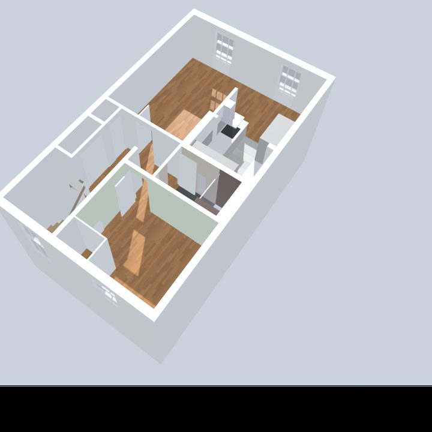

Fourth-floor one-bed
- 53.32 m²
- 1 bedroom
- ceiling 2.26 m
- viewed Nov 2026
Open-plan reception and dining room with a galley kitchen, a shower room and a double bedroom with a built-in closet. Sloped ceilings run along the front and back windows.